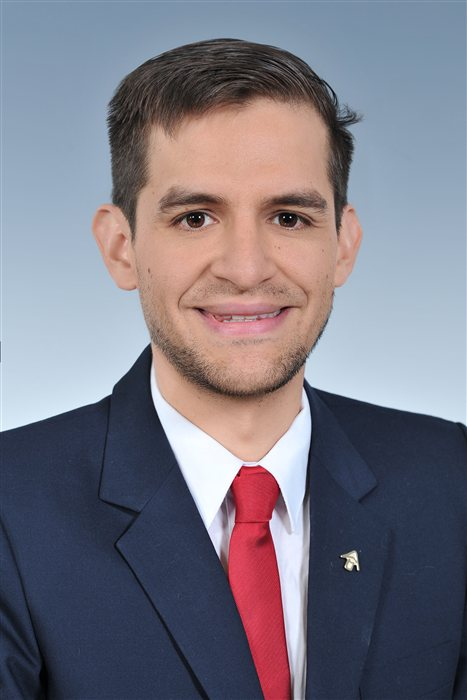

Quant Developer & Entrepreneur — MBA Candidate at CEIBS
I build trading systems, run a small algorithmic trading business across global markets, and am now at CEIBS in Shanghai preparing to bridge digital and physical trade between China, Europe, and South America.
About
I started out chasing a fascination with mathematics that turned into a fascination with code. I studied Informatics Engineering at Universidad Mayor de San Simón in Bolivia, graduating top of my faculty, with an exchange year in Portugal that gave me my first real taste of building something of my own — a small app with two other developers, late nights, and the realization that I wanted to keep making usable things for the rest of my life.
From there I did a dual Master's in Dependable Software Systems between the University of St Andrews (UK) and Université de Lorraine (France), on an Erasmus Mundus scholarship, where I learned to design for failure rather than wait for it. I then joined Flow Traders in Amsterdam as a software developer, building low-latency systems for one of the world's largest ETP liquidity providers — and eventually talked my way onto the trading floor itself, so I could understand the business, not just the tickets.
In 2020 I went independent. I built my own algorithmic trading operation from scratch with a small team of developers, trading across global stocks, derivatives, and digital assets, and learning the hard way that risk management isn't optional — a feed error once cost me a month's profits in seconds, which is how I became very serious about kill-switches.
Today I'm an MBA candidate at CEIBS in Shanghai, on a Shanghai Government Scholarship, working on the next step: moving from purely digital trading into physical trade between China, Europe, and South America. Outside of work, I'm fairly serious about languages and cultures — I've studied, lived, or worked in Spanish, Portuguese, French, English, and Dutch, and I'm now building up my Mandarin ahead of life in Shanghai.
Experience
Lead Quantitative Trader & Developer
Independent / Self-Employed · Apr 2020 – Present · Global
Software Developer
Flow Traders · Sep 2018 – Mar 2020 · Amsterdam, NL
Research Intern
Loria / Inria Research Lab · Mar 2017 – Jul 2017 · Nancy, FR
Education
MBA
CEIBS, Shanghai · 2026 – Present
M.Sc. in Dependable Software Systems (Dual Degree)
University of St Andrews (UK) & Université de Lorraine (FR) · 2016 – 2018
B.Sc. in Informatics Engineering
Universidad Mayor de San Simón, Bolivia · 2012 – 2016
Languages
Studying in Spanish-, Portuguese-, French-, and English-speaking countries, and working in a Dutch-speaking one, left me a bit addicted to learning languages. Mandarin is the current project.